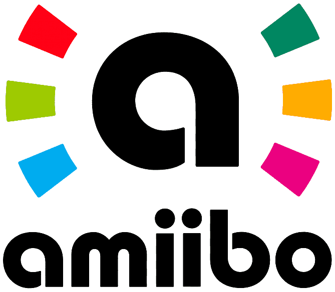

Amiibo (officially stylized as amiibo; plural: Amiibo) is a toys-to-life platform by Nintendo, which was launched in November 2014. It consists of a wireless communications and storage protocol for connecting figurines to the Wii U, Nintendo 3DS, and Nintendo Switch video game consoles. These figurines are similar in form and functionality to that of the Skylanders, Disney Infinity and Lego Dimensions series of toys-to-life platforms. The Amiibo platform was preannounced to potentially accommodate any form of toy, specifically including general plans for future card games. These toys use near field communication (NFC) to interact with supported video game software, potentially allowing data to be transferred in and out of games and across multiple platforms. Amiibo functionality can be used directly with the Nintendo Switch, Wii U, and New Nintendo 3DS consoles by using built-in NFC readers. In addition, the rest of the 3DS hardware line can use an official NFC adapter. By September 2016, Nintendo reported that 39 million Amiibo toys had been sold, along with more than 30 million Amiibo cards.
Amiibo figures turns into a CPU character which learns how the player fights and improves its skill and abilities.
Toad's amiibo unlocks a game mode which hides a pixelated Toad in every level which has to be found by the player.
Any amiibo unlocks random weapons or armors which can be used in game. Link, Toon Link, Zelda and Sheik's amiibo unlocks specific weapons from The Legend of Zelda series.
Fire Emblem's amiibo of this game unlock exclusive dungeons meanwhile other amiibos of the saga unlock a "phantom" version of those characters.
The Legend of Zelda's amiibo drops a chest with cooking ingredients, weapons or armor. Although there is a small change which the Link riding Epona amiibo unlocks the horse. Also, the Four Guardians' amiibo allows the player to use their powers atuomatically without waiting the reload time.
Both amiibos and cards forces the character to appear in the island with the chance to make them a resident. There's a exception with those who are "special" characters, which only allows the user to visit to get a poster and take pictures with them.
Shovel Knight's amiibo allowed the user to unlock the 2-player mode in the Wii U version. Other amiibos from this series unlocks exclusive armor sets, challenge stages and the ability to summon fairy companions to accompany players on quests.